if(!require(gap)) install.packages("gap", dependencies = T)## Loading required package: gap## gap version 1.2.2##
## Attaching package: 'gap'## The following object is masked from 'package:car':
##
## logit# Tema personalizado
blank_theme <- function(){
theme(panel.grid.minor = element_blank(),
panel.grid.major = element_blank(),
panel.background = element_blank(),
axis.line = element_blank(),
aspect.ratio = 1/1.61,
axis.ticks = element_blank(),
text = element_text(colour = "gray50"),
legend.position = "none"
)
}
# Función para graficar la relación entre dos variables; i.e.,
# una forma elegante de llamarle a un gráfico de dispersión con valores por defecto...
rel.plot <- function(data, aest,
medidas = TRUE,
corre = NA, covar = NA,
eq = "", ...){
# Construcción del gráfico sin anotaciones
plot <- ggplot(data = data, aest) +
labs(title = "Relación entre dos variables",
caption = paste("Datos simulados: ", eq)) +
geom_point(color = "deepskyblue4", alpha = 0.5, size = 2) +
expand_limits(y = c(5, -3)) +
blank_theme()
# Si medidas es TRUE, agregar las medidas al gráfico
if(isTRUE(medidas)){plot <- plot + annotate("text", x = 15, y = -2,
label = paste("Cor. = ", round(corre, 2),
"\n Cov. = ", round(covar,2)),
color = "gray50")}
return(plot)
}Generemos un par de variables donde la segunda sea una función lineal de la primera:
df1 <- data.frame(v1 = -20:20)
df1["v2"] <- (10+2*df1$v1)
df1Obtengamos la covarianza:
covar <- cov(df1$v1, df1$v2)
covar## [1] 287Ahora calculemos el índice de correlación
corre <- cor(df1$v1, df1$v2)
corre## [1] 1Por último, grafiquemos los resultados e incluyamos el valor de ambas medidas:
library(ggplot2)
lin.plot1 <- rel.plot(data = df1, aest = aes(v1, v2),
eq = "v2 = 10 + 2*v1",
covar = covar, corre = corre)
lin.plot1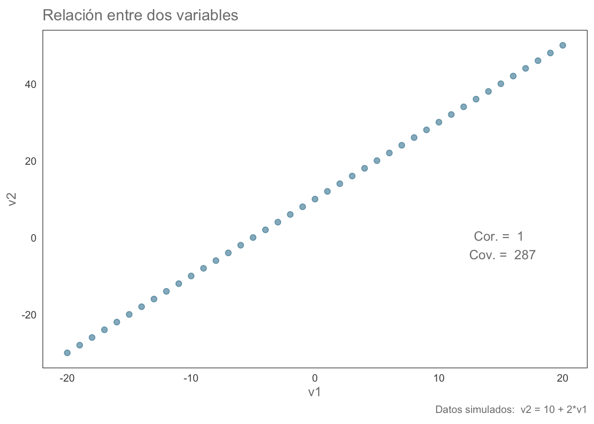
Ambos resultados nos dicen que existe una relación directamente proporcional entre ambas variables (conforme incrementa una incrementa la otra); sin embargo, debido a que la correlación se encuentra contenida entre [-1,1] podemos comprobar que es una relación LINEAL perfecta. Debido a esta diferencia en interpretabilidad normalmente trabajaremos con el índice de correlación, pero es importante recordar que estamos trabajando con un análisis paramétrico que supone una relación del tipo \(Y = \beta_0 + \beta_1\cdot X + \epsilon\) y que por tanto puede NO ser una forma adecuada para describir los datos, veamos un ejemplo:
df1["v3"] <- (-df1$v1^2)
pot.plot <- rel.plot(data = df1, aest = aes(v1, v3),
eq = "v3 = -v1^2",
covar = cov(df1$v2, df1$v3),
corre = cor(df1$v2, df1$v3)
)
pot.plot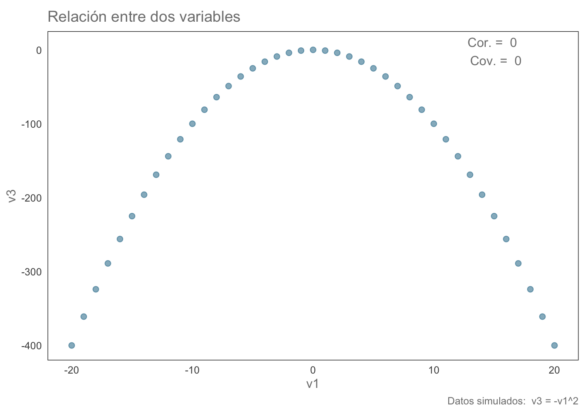
Otro ejemplo:
df1["v4"] <- sin(df1$v1)
sin.plot <- rel.plot(data = df1, aest = aes(v1, v4),
eq = "v4 = sin(v1)",
covar = cov(df1$v1, df1$v4),
corre = cor(df1$v1, df1$v4))
sin.plot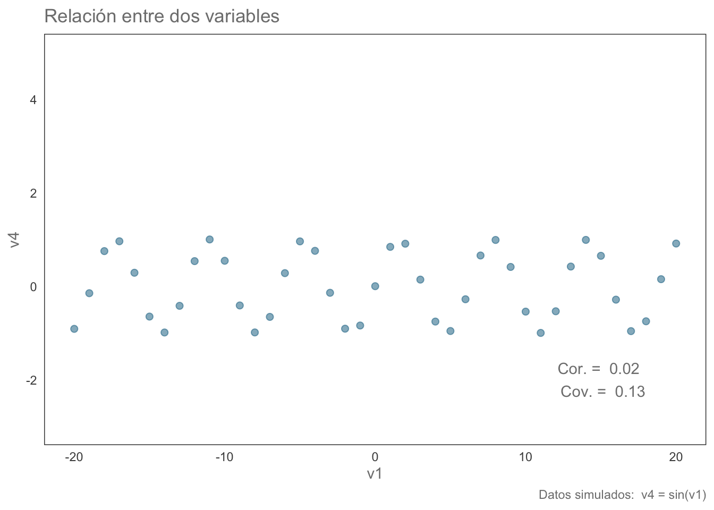
A diferencia de la correlación de Pearson la correlación de Spearman nos permite calcular la correlación entre variables ordinales o continuas, siempre y cuando la relación sea monótona:
df2 <- data.frame(v1 = df1$v1[df1$v1 > 0],
v2 = df1$v1[df1$v1 > 0]^2,
mono = "monótona")
df2 <- rbind(df2, data.frame(v1= df1$v1,
v2 = df1$v3,
mono = "no monótona"))
mono.plot <- rel.plot(data = df2, aest = aes(v1, v2),
eq = "v2 = 10 + 2*v1 | v2 = -v1^2",
medidas = FALSE) +
facet_wrap(~mono, nrow = 2, scales = "free_y") +
theme(aspect.ratio = 1/1.61)
mono.plot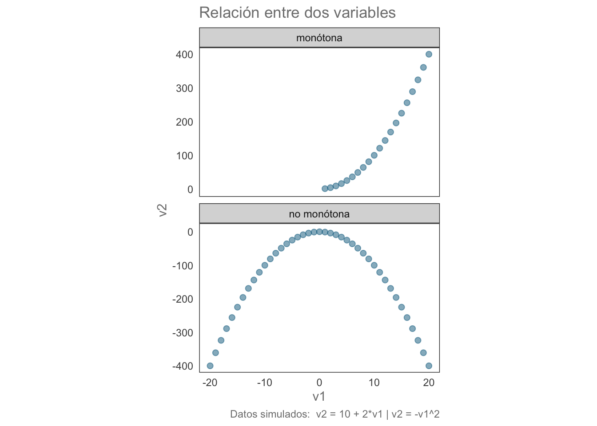
Utilicemos el primer caso para calcular las correlaciones de Pearson y Spearman y ver las diferencias
paste("Pearson = ",
round((cor(df2$v1[df2$mono == "monótona"],
df2$v2[df2$mono == "monótona"],
method = "pearson")), 2)
)## [1] "Pearson = 0.97"paste("Spearman = ",
round((cor(df2$v1[df2$mono == "monótona"],
df2$v2[df2$mono == "monótona"],
method = "spearman")), 2)
)## [1] "Spearman = 1"Un modelo de regresión es un modelo predictivo de aprendizaje automatizado en el cual, a partir de los datos disponibles al momento, podemos intentar predecir resultados futuros (extrapolación) o resultados con los que no contamos (interpolación); es decir, resultados que el modelo no haya visto. Si las predicciones son adecuadas, el modelo nos puede servir para describir la naturaleza de la relación de ambas variables, al menos en términos matemáticos/numéricos. En esta sesión revisaremos algunos criterios para evaluar la bondad de ajuste de nuestro modelo (lit. qué tan bueno es), aunque nos limitaremos, por el momento, a hablar únicamente en términos de nuestros datos. Cuando lleguemos a la sección de multivariado hablaremos sobre el problema de la memorización/sobre-ajuste y una forma más objetiva de evaluar nuestros modelos.
El modelo de Regresión más sencillo es la regresión lineal simple, en la cual describimos la relación entre dos variables continuas utilizando la ecuación de la recta. Es decir, asumimos una relación del tipo \(y = \beta_0 \pm \beta_1*x + \epsilon\), en el cual \(\beta_0\) representa la ordenada al origen (x = 0) y \(\beta_1\) la pendiente de la recta o, en otras palabras, cuántas unidades nos movemos en el eje y por cada unidad en el eje x. Recordemos que la función de pérdida para este análisis es la distancia cuadrática entre valores observados y predichos; es decir, el método de mínimos cuadrados.
Para ejemplificarlo, carguemos los datos contenidos en example_data.csv:
df.reg1 <- read.csv("data/example_data.csv")
data.reg1 <- rel.plot(data = df.reg1, aest = aes(v1, v2),
medidas = T,
corre = cor(df.reg1$v1, df.reg1$v2),
covar = cov(df.reg1$v1, df.reg1$v2))
data.reg1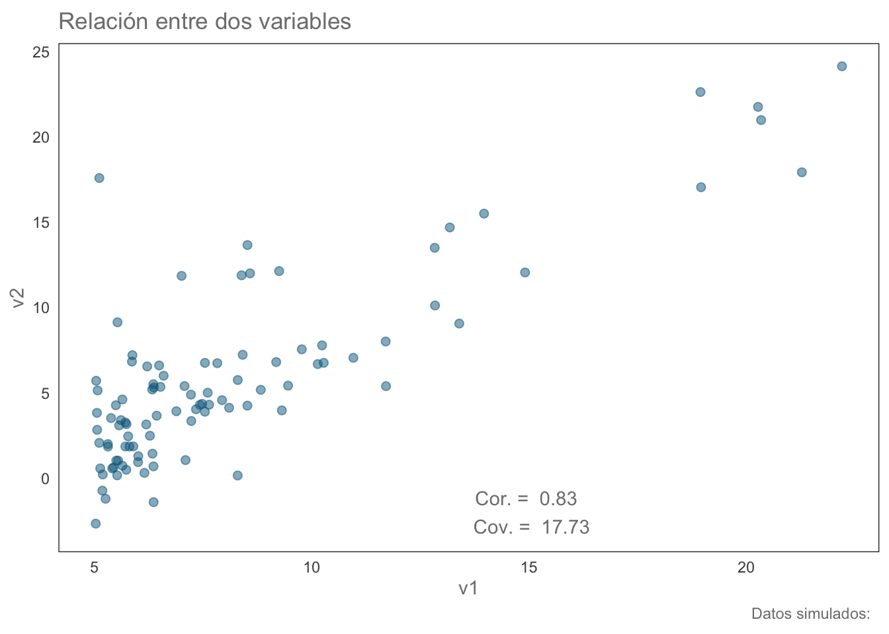
Ajustemos el modelo de mínimos cuadrados a los datos y veamos los resultados de la regresión. Observemos que en los resultados se incluyen 3 pruebas de hipótesis: una prueba de t para cada parámetro y una prueba de ANOVA (que ignoraremos por el momento). De estas priebas es posible concluir que los parámetros son diferentes de un modelo nulo; es decir, de un modelo en el que \(\beta_0 = 0; \beta_1 = 0\). El valor de \(R^2\) sugiere que el modelo únicamente explica alrededor del 70% de la varianza de los datos, lo cual sugiere que el modelo no está capturando aproximadamente una tercera parte de la información contenida en ellos. Finalmente, el valor de RSE dividido entre el valor promedio de la variable predicha nos da la tasa de error del modelo. El RSE también nos indica en cuántas unidades se desvía la predicción de los datos observados, que en este caso son 3.095.
reg1 <- lm(v2~v1, data = df.reg1)
summary(reg1)##
## Call:
## lm(formula = v2 ~ v1, data = df.reg1)
##
## Residuals:
## Min 1Q Median 3Q Max
## -5.8956 -1.9924 -0.5525 1.5351 15.3006
##
## Coefficients:
## Estimate Std. Error t value Pr(>|t|)
## (Intercept) -3.72654 0.73213 -5.09 1.81e-06 ***
## v1 1.17765 0.08141 14.47 < 2e-16 ***
## ---
## Signif. codes: 0 '***' 0.001 '**' 0.01 '*' 0.05 '.' 0.1 ' ' 1
##
## Residual standard error: 3.095 on 95 degrees of freedom
## Multiple R-squared: 0.6878, Adjusted R-squared: 0.6845
## F-statistic: 209.3 on 1 and 95 DF, p-value: < 2.2e-16sum_res <- summary(reg1)
paste("Tasa de error = ", as.character(round(sum_res$sigma/mean(df.reg1$v2), 2)*100), "%")## [1] "Tasa de error = 53 %"Ahora grafiquemos la recta ajustada. Para ello primero extraeremos los valores ajustados y después los utilizaremos para construir la linea recta
df.reg1["ajustados"] <-reg1$fitted.values
lin.plot2 <- data.reg1 +
geom_line(data = df.reg1,
aes(x = v1, y = ajustados),
colour = rgb(118,78,144, maxColorValue = 255),
size = 1) +
labs(subtitle = paste("Modelo ajustado: v2 = ",
round(reg1$coefficients[1],2),
" + ",
round(reg1$coefficients[2],2),
"*v1 + e"))
lin.plot2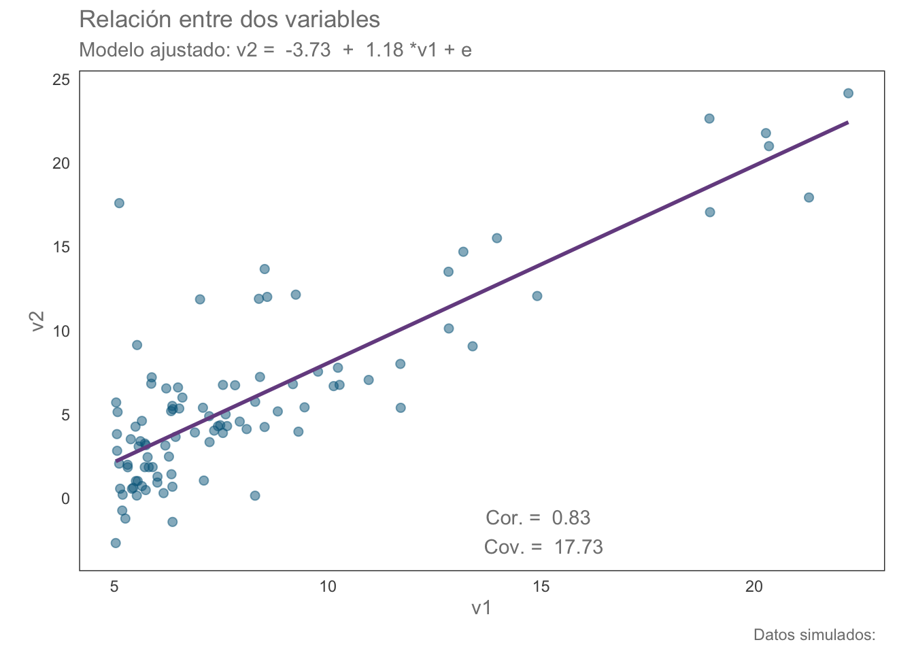
Ahora podemos calcular y graficar los intervalos de confianza para la predicción de la regresión:
confint.reg1 <- confint(reg1)
confint.reg1## 2.5 % 97.5 %
## (Intercept) -5.179989 -2.273085
## v1 1.016035 1.339263df.reg1["inf.int"] <- confint.reg1[1,1] + confint.reg1[2,1]*df.reg1$v1
df.reg1["sup.int"] <- confint.reg1[1,2] + confint.reg1[2,2]*df.reg1$v1
lin.plot3 <- lin.plot2 +
geom_ribbon(data = df.reg1, aes(ymin = inf.int, ymax = sup.int),
fill = "gray70",
alpha = 0.3) +
labs(caption = "Datos simulados. El área gris representa los intervalos de confianza al 95% \n
de la estimación de ambos parámetros")
lin.plot3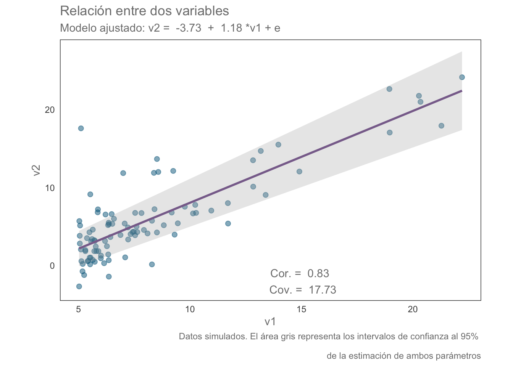
conf.plot.reg1 <- data.reg1 + geom_smooth(method = lm,
colour = rgb(118,78,144, maxColorValue = 255)) +
labs(caption = "Datos simulados. El área gris representa el intervalo de confianza de la regresión al 95%",
subtitle = paste("Modelo ajustado: v2 = ",
round(reg1$coefficients[1],2),
" + ",
round(reg1$coefficients[2],2),
"*v1 + e"))
conf.plot.reg1## `geom_smooth()` using formula 'y ~ x'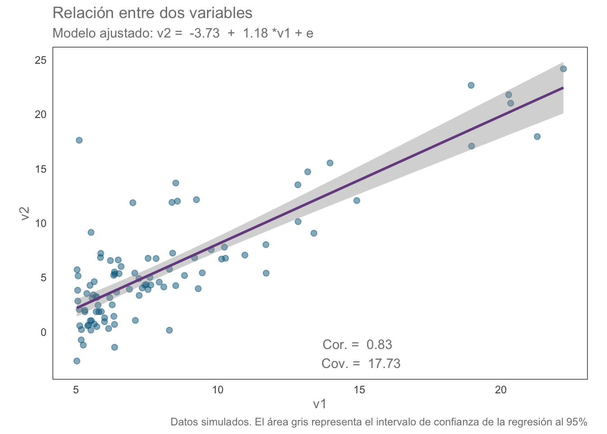
Ahora evaluemos gráficamente la calidad del modelo ajustado.
####Gráfico cuantil-cuantil Es posible observar que los datos presentan una gran cantidad de desviaciones con respecto a una distribución normal:
w <- shapiro.test(df.reg1$v2)
qqplot1 <- ggplot(data = df.reg1, aes(sample = v2)) +
geom_qq(colour = "deepskyblue4", size = 3, alpha = 0.5) +
geom_qq_line(colour = rgb(118,78,144, maxColorValue = 255), size = 1) +
annotate("text", x = 1, y = 0,
label = paste("W = ", round(w[["statistic"]],2), "; p ",
ifelse(w[["p.value"]] < 0.001,
"< 0.001",
round(w[["p.value"]],2))),
colour = "gray 50"
) +
blank_theme() +
labs(title = "Gráfico QQ",
x = "Cuantiles teóricos para la muestra",
y = "Datos observados")
qqplot1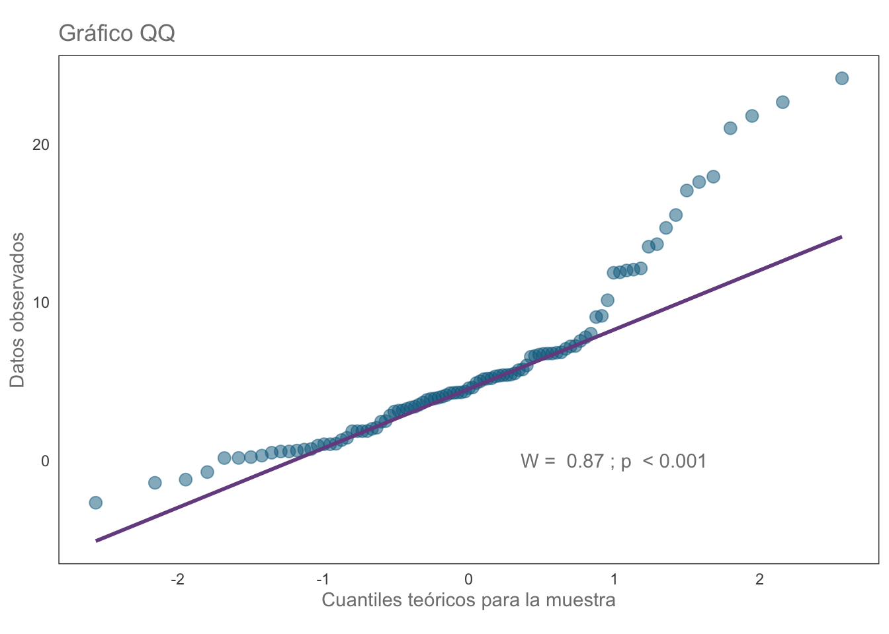
w1 <- shapiro.test(rstandard(reg1))
qqplot2 <- ggplot(reg1) + stat_qq(aes(sample = .stdresid), colour = "deepskyblue4", size = 3, alpha = 0.5) +
geom_abline(colour = rgb(118,78,144, maxColorValue = 255), size = 1) +
labs(x = "Cuantiles teóricos",
y = "Residuales estandarizados",
title = "Gráfico QQ",
subtitle = paste("W = ", round(w1[["statistic"]],2), "; p ",
ifelse(w1[["p.value"]] < 0.001,
"< 0.001",
round(w[["p.value"]],2)))) +
blank_theme()
qqplot2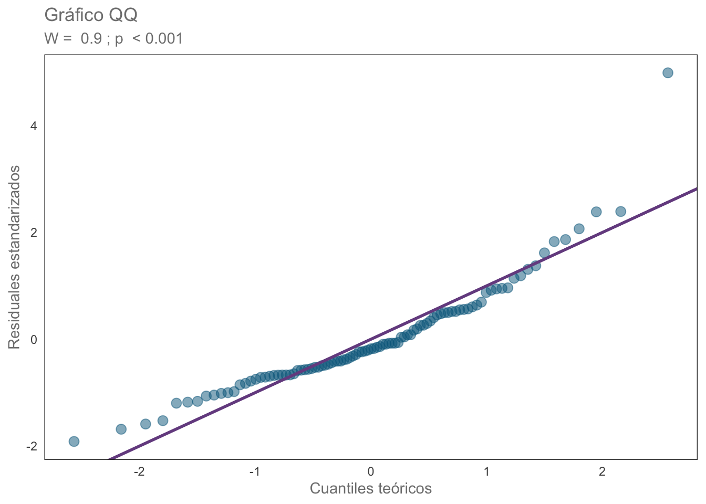
En este gráfico es posible observar que los datos no están distribuídos de manera homogénea; es decir, no son datos heterocedásticos
scale.loc.plot <- ggplot(reg1, aes(.fitted, sqrt(abs(.stdresid)))) +
geom_point(na.rm=TRUE, colour = "deepskyblue4", size = 3, alpha = 0.5) +
stat_smooth(method="loess", na.rm = TRUE, colour = rgb(118,78,144, maxColorValue = 255)) +
labs(x = "Valores ajustados",
y = expression(sqrt("|Residuales estandarizados|")),
title = "Escala-Locación"
) +
blank_theme()
scale.loc.plot## `geom_smooth()` using formula 'y ~ x'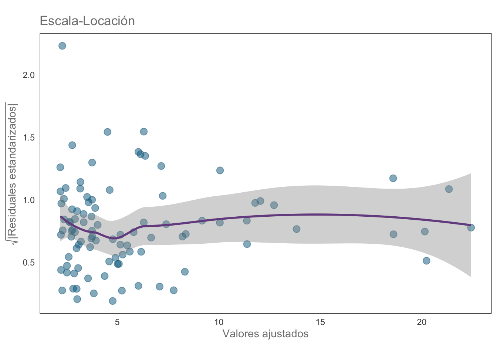
Es posible observar que existe una cantidad importande de datos extremos (fuera de \(\pm\) 2 desviaciones estándar)
df.reg1["std.resids"] <- rstandard(reg1)
resid.plot <- ggplot(data = df.reg1, aes(x = ajustados, y = std.resids, colour = std.resids)) +
geom_point(size = 3, alpha = 0.5) +
stat_smooth(method = "loess", colour = rgb(118,78,144, maxColorValue = 255)) +
geom_hline(yintercept = 0, col = "red", linetype = "dashed") +
labs(title = "Gráfico de Residuales",
x = "Valores ajustados",
y = "Residuales estandarizados") +
blank_theme() +
scale_color_gradient2(low = "firebrick",
midpoint = 0,
mid = "deepskyblue4",
high = "firebrick",
breaks = c(-2, 0, 2),
limits = c(-2, 2),
oob = scales::squish)
resid.plot## `geom_smooth()` using formula 'y ~ x'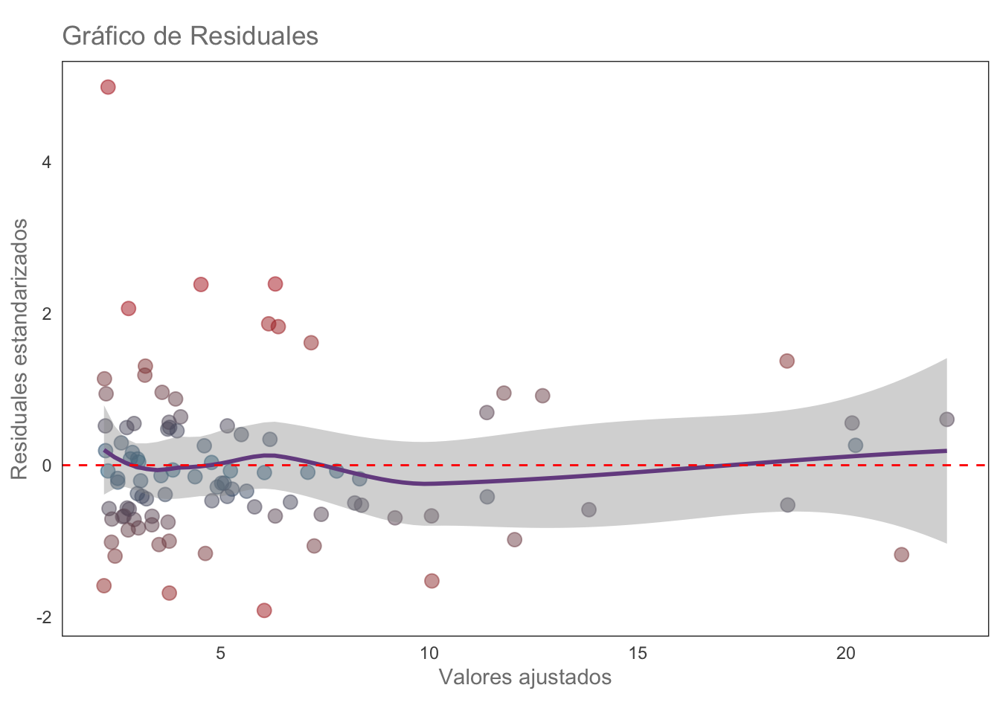
resid.plot2 <- ggplot(reg1, aes(x = .fitted, y = .stdresid, colour = .stdresid)) +
geom_point(size = 3, alpha = 0.5) +
geom_hline(yintercept = 0, col = "red", linetype = "dashed") +
geom_smooth(method = "loess", colour = rgb(118,78,144, maxColorValue = 255)) +
labs(title = "Gráfico de Residuales",
x = "Valores ajustados",
y = "Residuales estandarizados") +
blank_theme() +
scale_color_gradient2(low = "firebrick",
midpoint = 0,
mid = "deepskyblue4",
high = "firebrick",
breaks = c(-2, 0, 2),
limits = c(-2, 2),
oob = scales::squish)
resid.plot2## `geom_smooth()` using formula 'y ~ x'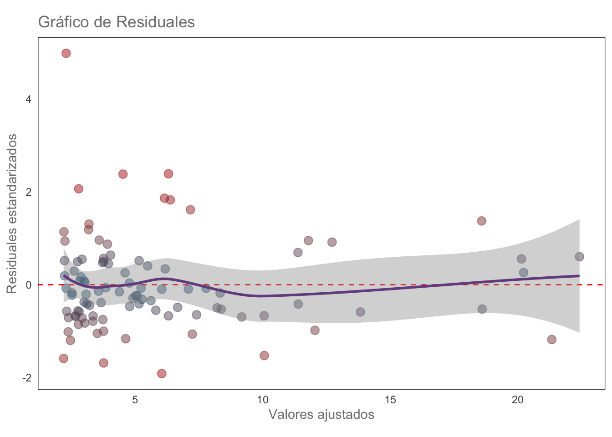
shapiro.test(df.reg1$std.resids)##
## Shapiro-Wilk normality test
##
## data: df.reg1$std.resids
## W = 0.89933, p-value = 1.797e-06Recordemos que al realizar el ajuste por máxima verosimilitud estamos encontrando los valores de los parámetros que MAXIMICEN la probabilidad de haber encontrado los datos (verosimilitud); es decir, es método probabilístico. En el caso de la RLS, nuestro modelo encuentra la máxima expectativa de y (forma elegante de llamarle a la media), siguiendo una distribución normal. En la clase de GLM Roberto explicará cómo ajustar modelos lineales en los que el error NO se modela bajo una distribución normal y los criterios para su formación.
A diferencia de la implementación de una regresión por mínimos cuadrados, ajustar el modelo mediante máxima verosimilitud no es tan intuitivo. El primer paso es establecer manualmente nuestra función de verosimilitud, ajustando una distribución normal a los residuales:
data <- df.reg1[c("v1", "v2")]
LL <- function(b0, b1, mu, sigma){
# Encontrar los residuales. Modelo a ajustar
R = data$v2 - data$v1 * b1 - b0
# Calcular la verosimilitud. Residuales con distribución normal.
R = suppressWarnings(dnorm(R, mu, sigma))
# Sumar el logaritmo de las verosimilitudes para todos los puntos de datos.
-sum(log(R))
}Ahora ajustamos el modelo que acabamos de crear, utilizando la función mle(fun, start = list()) (maximum likelihood estimation), donde fun es la función a ajustar y start son los valores iniciales de los parámetros. En este paso lo que estamos haciendo es estimar los dos parámetros (media y desviación estándar) que mejor describen los datos:
library(stats4)
mle.fit <- mle(LL, start = list(b0 = 1, b1 = 1, sigma = 1),
fixed = list(mu = 0),
nobs = length(data$v2))
summary(mle.fit)## Maximum likelihood estimation
##
## Call:
## mle(minuslogl = LL, start = list(b0 = 1, b1 = 1, sigma = 1),
## fixed = list(mu = 0), nobs = length(data$v2))
##
## Coefficients:
## Estimate Std. Error
## b0 -3.726537 0.72453828
## b1 1.177649 0.08056368
## sigma 3.063056 0.21991454
##
## -2 log L: 492.4402Si nos interesa comparar el ajuste entre modelos podemos utilizar el RMSE. Para ello primero generaremos los valores predichos (ajustados) por el modelo y después los contrastaremos contra los datos originales
library(Metrics)##
## Attaching package: 'Metrics'## The following object is masked from 'package:pROC':
##
## auc## The following objects are masked from 'package:caret':
##
## precision, recall## The following object is masked from 'package:FSA':
##
## se## The following object is masked from 'package:rcompanion':
##
## accuracydata["v2adj"] <- coef(mle.fit)["b0"] + coef(mle.fit)["b1"]*data$v1
rmse(data$v2adj, data$v2)## [1] 3.063056Veamos ahora los resultados de la RLS por mínimos cuadrados:
data["v2adjols"] <- coef(reg1)["(Intercept)"] + coef(reg1)["v1"]*data$v1
coef(reg1)## (Intercept) v1
## -3.726537 1.177649rmse(data$v2adjols, data$v2)## [1] 3.063056Tanto los coeficientes como los valores de RMSE ¡son iguales! ¿Razón? Un modelo lineal ajustado por máxima verosimilitud utilizando un término de residuales con un error normalmente distribuido es equivalente a un modelo ajustado por mínimos cuadrados. Veamos qué pasa si ajustamos los residuales utilizando otra distribución, seleccionada “a ojo” (solo para fines del ejemplo) por la “forma” de la distribución de los datos:
density <- ggplot(data = data, aes(x = v2)) +
geom_density(colour = "deepskyblue4", fill = "deepskyblue4", alpha = 0.5) +
blank_theme() +
labs(y = element_blank(),
title = "Gráfico de densidad de la variable a predecir") +
scale_y_continuous(breaks = NULL)
density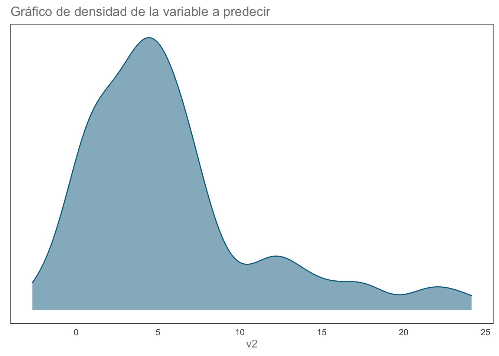 Esta distribución “se parece” a una distribución gamma.
LLg <- function(b0, b1, shape, rate){
# Encontrar los residuales. Modelo a ajustar (lineal)
R = data$v2 - data$v1 * b1 - b0
# Calcular la verosimilitud. Residuales con distribución gamma
R = suppressWarnings(dgamma(R, shape = shape, rate = rate))
# Sumar el logaritmo de las verosimilitudes para todos los puntos de datos.
-sum(R, log = TRUE)
}
mleg.fit <- mle(LLg,
start = list(b0 = 1, b1 = 1,
shape = 1, rate = 1),
nobs = length(data$v2))
summary(mleg.fit)## Warning in sqrt(diag(object@vcov)): NaNs produced## Maximum likelihood estimation
##
## Call:
## mle(minuslogl = LLg, start = list(b0 = 1, b1 = 1, shape = 1,
## rate = 1), nobs = length(data$v2))
##
## Coefficients:
## Estimate Std. Error
## b0 3.02693623 0.001123079
## b1 0.03918585 0.001123853
## shape 0.86971294 NaN
## rate 1.08598904 0.577224471
##
## -2 log L: -28.91377Para comparar el ajuste con respecto al caso anterior podemos utilizar el Criterio de Información de Akaike. Vemos que, tomando en cuenta este criterio, el segundo modelo se encuentra mucho mejor ajustado que el primero (valor mínimo de AIC):
aics <- AIC(mle.fit, mleg.fit)
aics["Delta"] <- abs(abs(aics$AIC) - abs(min(aics$AIC)))
aicsTarea opcional: Generar un gráfico con ambas líneas de ajuste y los intervalos de confianza para la recta.
En este ejemplo analizaremos datos de morfometerías
df_haem <- read.csv("data/Haem.csv")
ggplot(data = df_haem, aes(x = LT, y = AM)) +
geom_point(color = "dodgerblue4") +
blank_theme() +
geom_smooth(method = "lm", colour = rgb(118,78,144, maxColorValue = 255)) +
labs(title = "Relación Altura Máxima ~ Longitud Total",
x = element_blank(),
y = element_blank(),
caption = "datos: Haem.csv")## `geom_smooth()` using formula 'y ~ x'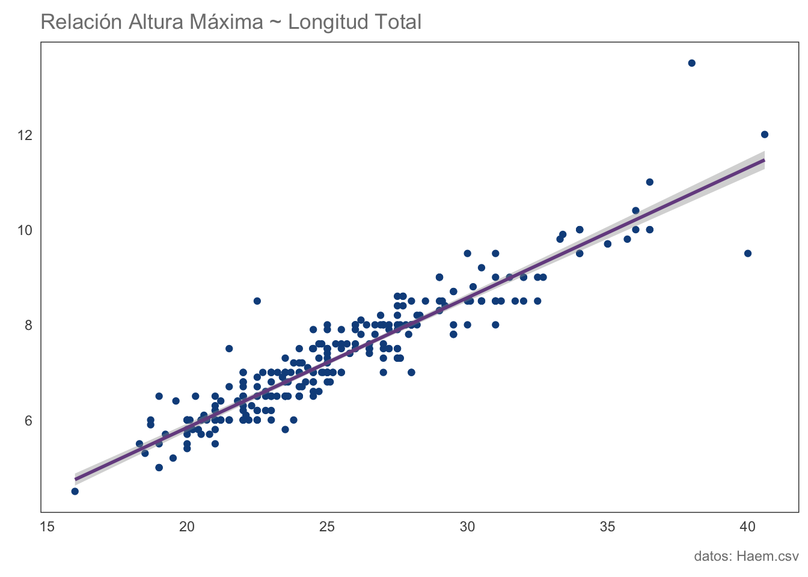
reg_haem <- lm(AM~LT, data = df_haem)
summary(reg_haem)##
## Call:
## lm(formula = AM ~ LT, data = df_haem)
##
## Residuals:
## Min 1Q Median 3Q Max
## -1.8016 -0.2692 -0.0249 0.2655 2.7445
##
## Coefficients:
## Estimate Std. Error t value Pr(>|t|)
## (Intercept) 0.379258 0.160430 2.364 0.0188 *
## LT 0.273059 0.006202 44.027 <2e-16 ***
## ---
## Signif. codes: 0 '***' 0.001 '**' 0.01 '*' 0.05 '.' 0.1 ' ' 1
##
## Residual standard error: 0.4422 on 281 degrees of freedom
## Multiple R-squared: 0.8734, Adjusted R-squared: 0.8729
## F-statistic: 1938 on 1 and 281 DF, p-value: < 2.2e-16qqplot2 <- ggplot(reg_haem) + stat_qq(aes(sample = .stdresid), colour = "deepskyblue4", size = 3, alpha = 0.5) +
geom_abline(colour = rgb(118,78,144, maxColorValue = 255), size = 1) +
labs(x = "Cuantiles teóricos",
y = "Residuales estandarizados",
title = "Gráfico QQ") +
blank_theme()
qqplot2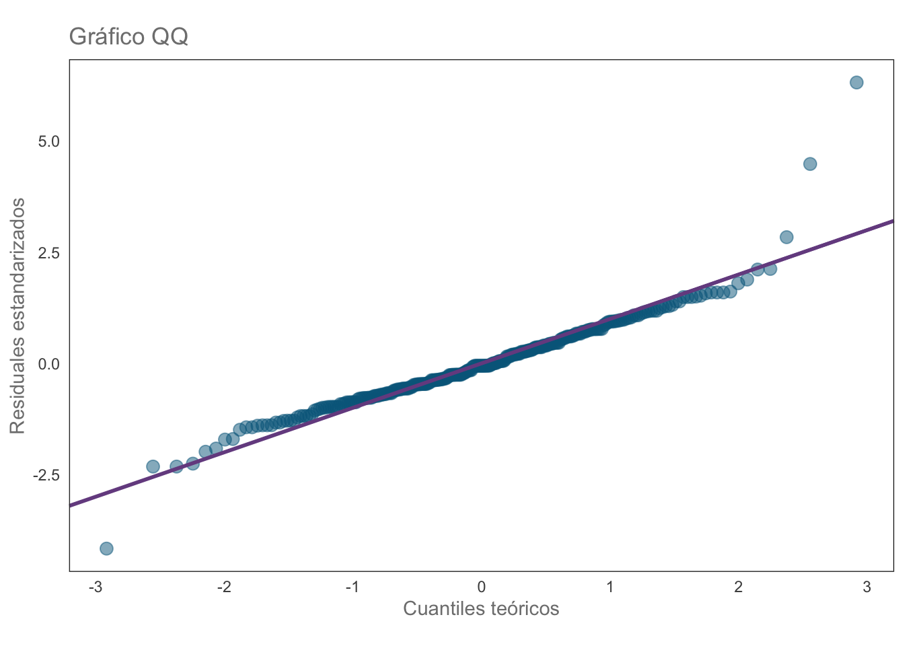
scale.loc.plot <- ggplot(reg_haem, aes(.fitted, sqrt(abs(.stdresid)))) +
geom_point(na.rm = TRUE, colour = "deepskyblue4", size = 3, alpha = 0.5) +
stat_smooth(method="loess", na.rm = TRUE, colour = rgb(118,78,144, maxColorValue = 255)) +
labs(x = "Valores ajustados",
y = expression(sqrt("|Residuales estandarizados|")),
title = "Escala-Locación"
) +
blank_theme()
scale.loc.plot## `geom_smooth()` using formula 'y ~ x'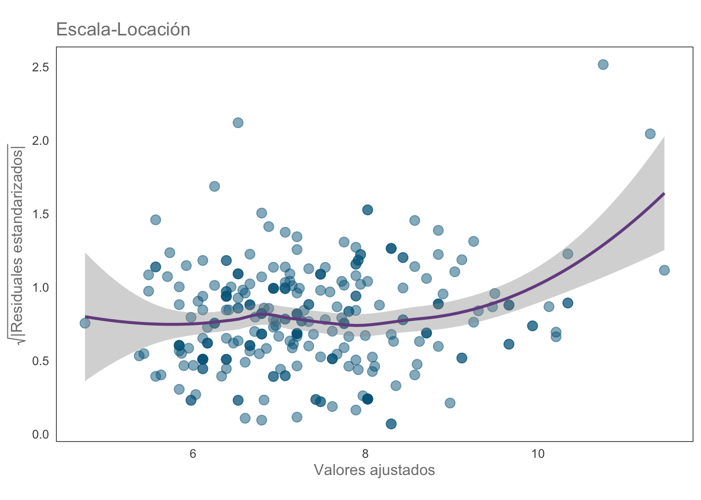
resid.plot2 <- ggplot(reg_haem, aes(x = .fitted, y = .stdresid, colour = .stdresid)) +
geom_point(size = 3, alpha = 0.5) +
geom_hline(yintercept = 0, col = "red", linetype = "dashed") +
geom_smooth(method = "loess", colour = rgb(118,78,144, maxColorValue = 255)) +
labs(title = "Gráfico de Residuales",
x = "Valores ajustados",
y = "Residuales estandarizados") +
blank_theme() +
scale_color_gradient2(low = "firebrick",
midpoint = 0,
mid = "deepskyblue4",
high = "firebrick",
breaks = c(-2, 0, 2),
limits = c(-2, 2),
oob = scales::squish)
resid.plot2## `geom_smooth()` using formula 'y ~ x'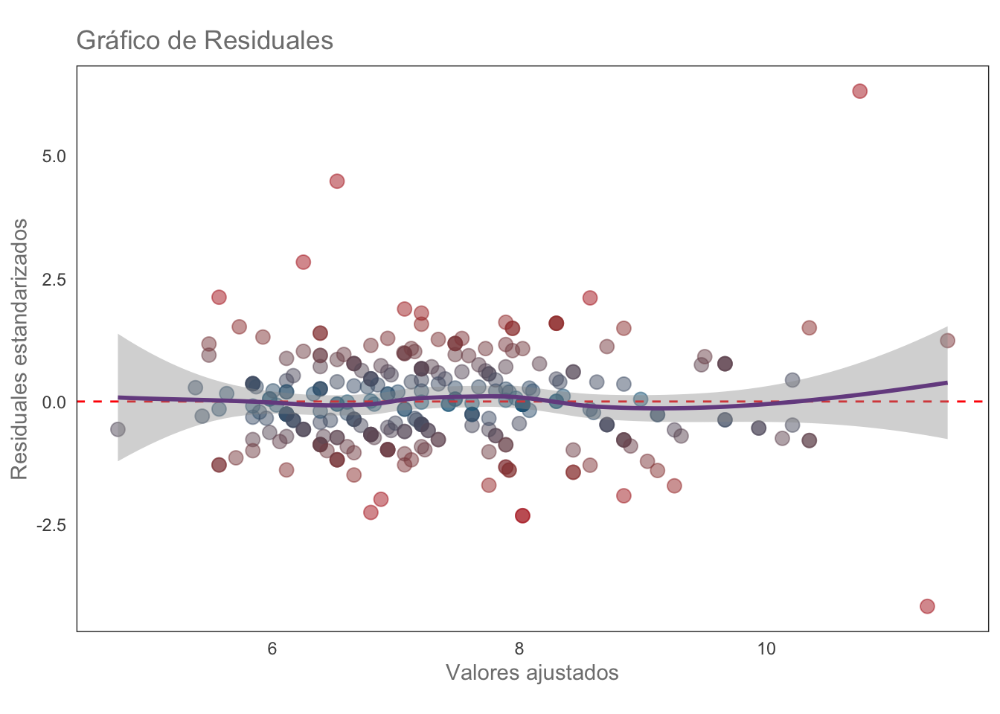
library(brms)## Loading required package: Rcpp## Registered S3 methods overwritten by 'lme4':
## method from
## cooks.distance.influence.merMod car
## influence.merMod car
## dfbeta.influence.merMod car
## dfbetas.influence.merMod car## Loading 'brms' package (version 2.14.4). Useful instructions
## can be found by typing help('brms'). A more detailed introduction
## to the package is available through vignette('brms_overview').##
## Attaching package: 'brms'## The following object is masked from 'package:gap':
##
## cs## The following object is masked from 'package:stats':
##
## arLLt <- function(b0, b1, df, sigma){
# Encontrar los residuales. Modelo a ajustar (lineal)
R = df_haem$AM - df_haem$LT * b1 - b0
# Calcular la verosimilitud. Residuales con distribución t de student
R = suppressWarnings(brms::dstudent_t(R, df = df, mu = 0, sigma = sigma))
# Sumar el logaritmo de las verosimilitudes para todos los puntos de datos.
-sum(R, log = TRUE)
}
mlet_fit <- mle(LLt,
start = list(b0 = 0, b1 = 0, df = 2, sigma = 10),
nobs = length(df_haem$AM),
lower = c(b0 = -20, b1 = -12, df = 1, sigma = 0.01),
upper = c(b0 = 20, b1 = 12, df = 30, sigma = 10))
summary(mlet_fit)## Warning in sqrt(diag(object@vcov)): NaNs produced## Maximum likelihood estimation
##
## Call:
## mle(minuslogl = LLt, start = list(b0 = 0, b1 = 0, df = 2, sigma = 10),
## nobs = length(df_haem$AM), lower = c(b0 = -20, b1 = -12,
## df = 1, sigma = 0.01), upper = c(b0 = 20, b1 = 12, df = 30,
## sigma = 10))
##
## Coefficients:
## Estimate Std. Error
## b0 0.03138976 0.0007736521
## b1 0.28139558 0.0000956608
## df 7.54037566 1.9191746025
## sigma 0.01000000 NaN
##
## -2 log L: -768.4337coef(reg_haem)## (Intercept) LT
## 0.3792585 0.2730588aics <- AIC(mlet_fit, reg_haem)
aics["Delta"] <- abs(abs(aics$AIC) - abs(min(aics$AIC)))
aicsperformancePodemos generar los gráficos diagnósticos de distintos modelos utilizando una sola línea de código. Veamos el caso del primer modelo lineal que elaboramos:
if (!require(performance)) {install.packages(c("performance", "qqplotr"), dependencies = T)}## Loading required package: performance##
## Attaching package: 'performance'## The following object is masked from 'package:brms':
##
## pp_check## The following objects are masked from 'package:Metrics':
##
## mae, mse, rmsecheck_model(reg1)## Loading required namespace: qqplotr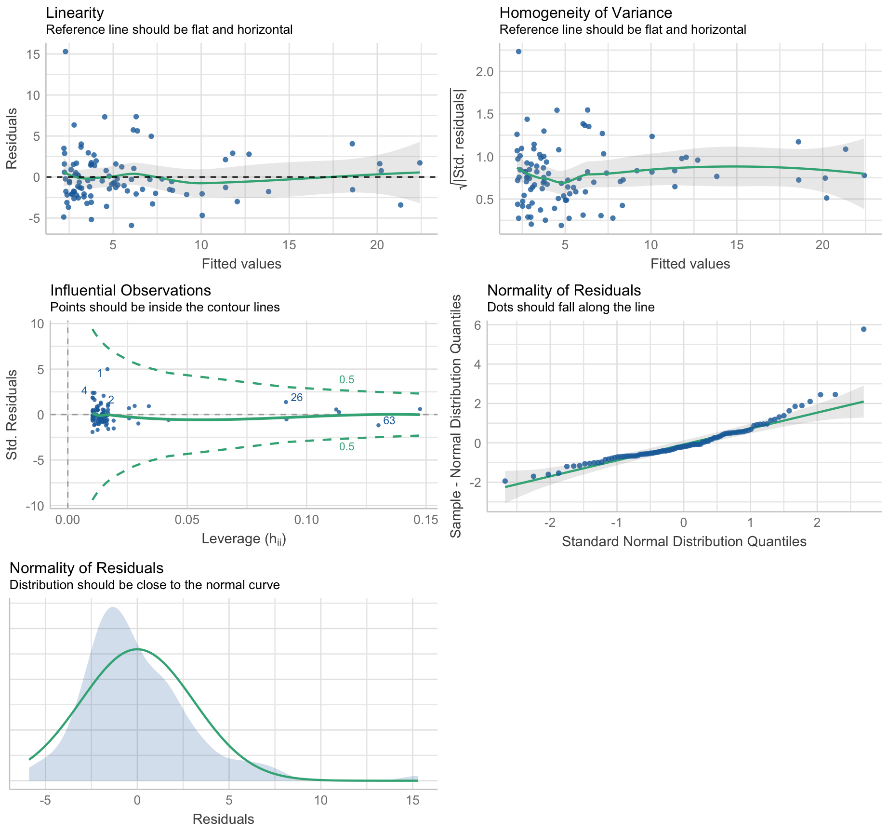 Ahora sobre los datos Haem.csv:
check_model(reg_haem)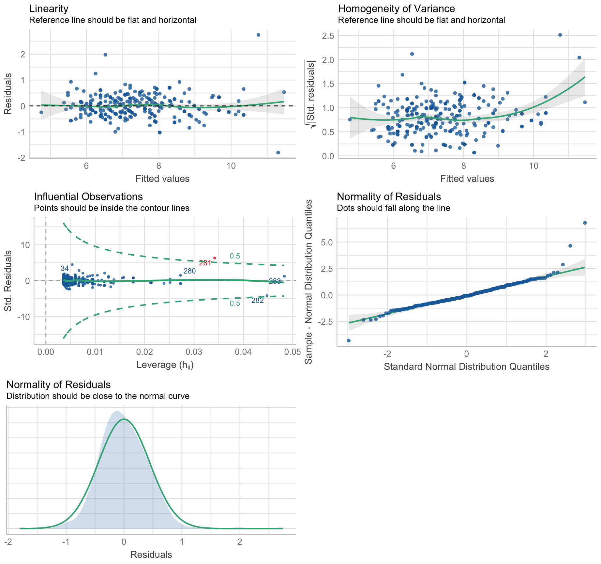
Supongamos ahora que la base de datos 1 en realidad consta de dos “grupos”. Una preguna razonable sería el saber si podemos agruparlos para realizar una RLS, y esto lo podemos resolver fácilmente con la prueba de Chow (1960). Primero, partamos los datos por aproximadamente la mitad:
df.reg2 <- df.reg1[,1:2]
df.reg2["grupo"] <- c(rep("A", 48), rep("B", 49))Ahora apliquemos la prueba de Chow, utilizando la función chow.test(y1, x1, y2, x2):
library(gap)
comp.reg <- chow.test(y1 = df.reg2$v2[df.reg2$grupo == "A"],
x1 = df.reg2$v1[df.reg2$grupo == "A"],
y2 = df.reg2$v2[df.reg2$grupo == "B"],
x2 = df.reg2$v1[df.reg2$grupo == "B"])
print(comp.reg)## F value d.f.1 d.f.2 P value
## 1.154458e+01 2.000000e+00 9.300000e+01 3.323879e-05Veamos las regresiones gráficamente::
ggplot(data = df.reg2, aes(x = v1, y = v2, colour = grupo, shape = grupo)) +
geom_point(alpha = 0.5, size = 3) +
geom_smooth(method = lm) +
blank_theme() +
labs(title = "Regresión lineal con dos grupos",
subtitle = paste("F (", comp.reg["d.f.1"], ", ", comp.reg["d.f.2"], ") = ",
round(comp.reg["F value"],2), ", ", "p = ", ifelse(comp.reg["P value"] < 0.001,
" < 0.001",
paste(" = ", comp.reg["P value"]))),
caption = "Datos simulados")## `geom_smooth()` using formula 'y ~ x'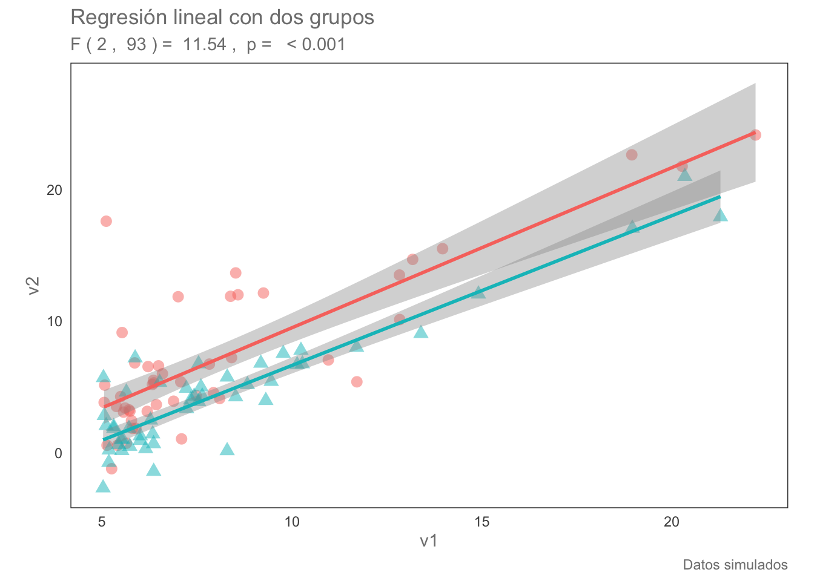
Aplicar la prueba de Chow a la base de datos Haem.csv, considerando los dos grupos en la columna Loc.